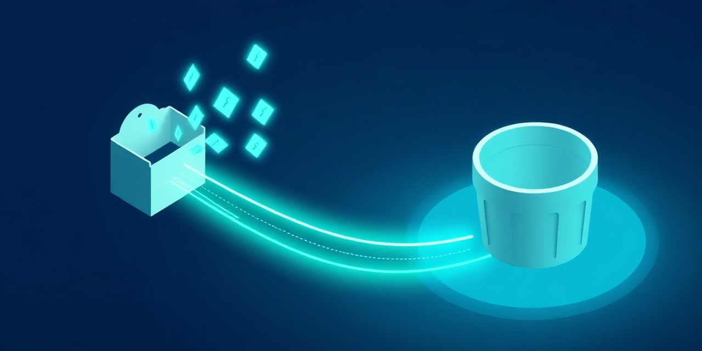
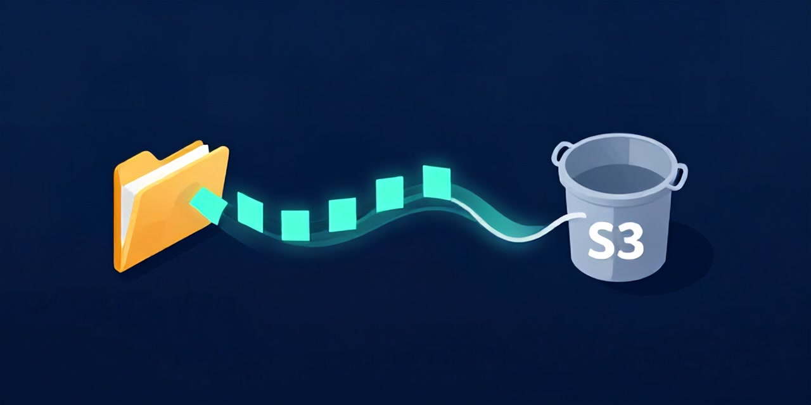
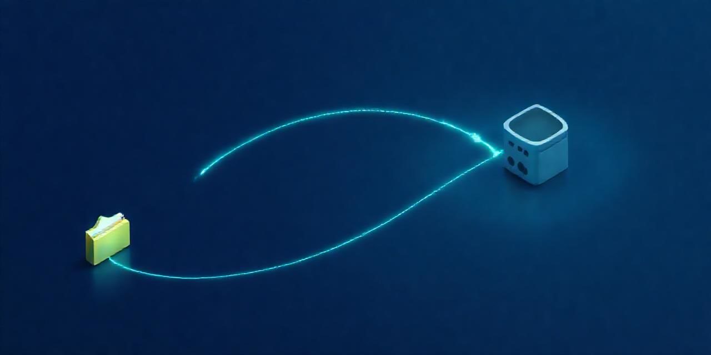
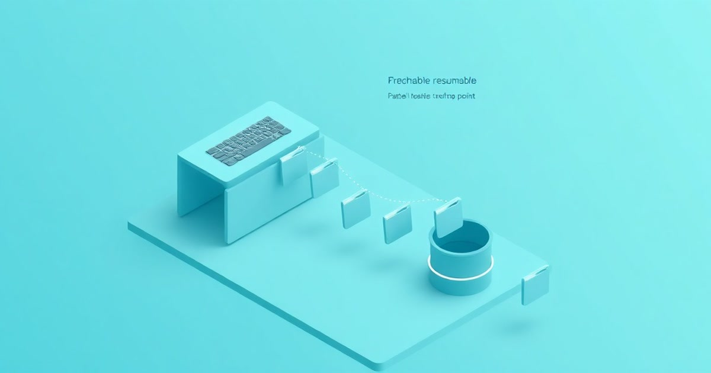
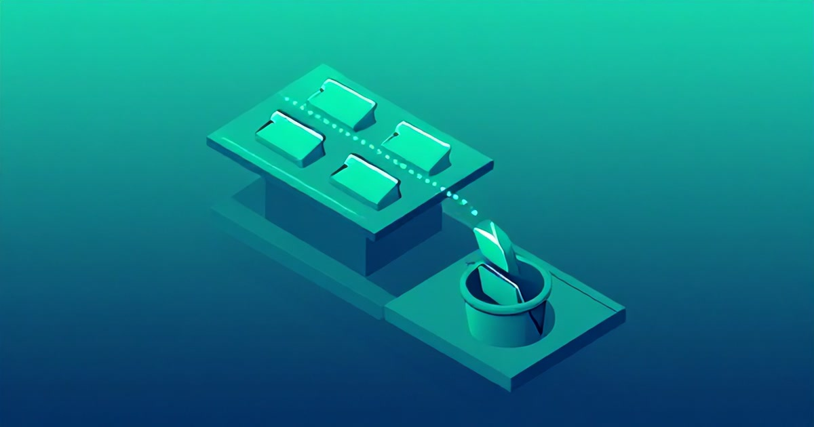
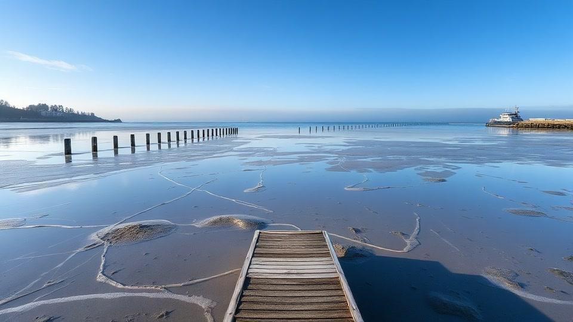
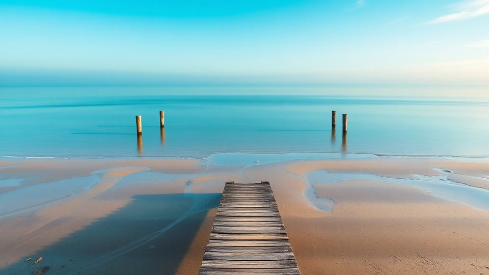
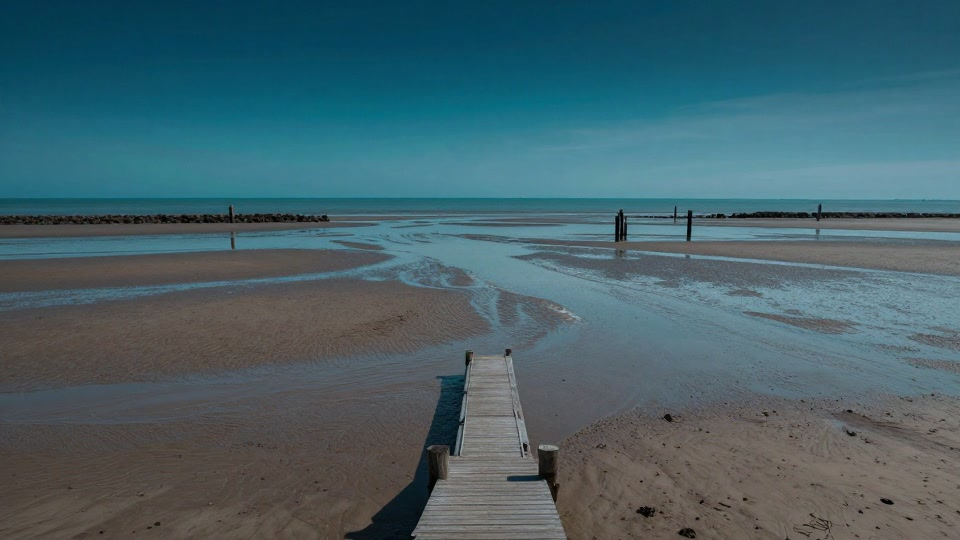

Create a sleek, modern isometric tech illustration with soft volumetric lighting and gentle ocean mist. Use only the brand hues—tide teal (#0e7490), deep sea blue (#164e63), and sea foam (#ecfeff)—with neutrals for balance. Mood is calm, reliable, and “always in sync,” avoiding clutter. Composition should feel clean and engineered: crisp edges, subtle gradients, and light reflections like water on metal. No text, letters, logos, or watermarks anywhere.
Attempt 1 · black-forest-labs/flux.1-schnell · seed 934843861 size 1280x640weight 29detail 30.12palette 0.92distinct okpromptfolder-to-S3 sync flow in an isometric view: a small open folder icon on the left sending glowing data packets along a curved cable of sea-foam light toward a distant simplified S3 bucket-like container on the right (no text). A soft tide-teal glow pulse travels across the path, implying resumable uploads. Background: dark deep-sea blue with faint ocean-mist gradient. Leave the entire center area clean for clear focal framing, no text or symbols. Cinematic lighting, crisp edges.

Attempt 2 · black-forest-labs/flux.1-schnell · seed 1615923034 size 1280x640weight 46detail 49.5palette 0.76distinct okpromptIsometric tech illustration: on the left, a small open folder icon ejects glowing sea-foam teal data packets that travel along a curved cable/stream of the same teal toward a simplified S3 bucket-like container on the right. Add a subtle pulse of lighter teal to imply resumable upload. Background: dark deep-sea blue with a faint ocean-mist gradient. Keep the entire center area calm and uncluttered for clear focal framing. Cinematic lighting, crisp edges. Color rule: use only deep blues, teal/sea-foam greens, and neutral grays (no other hues).

Attempt 3 · tongyi-mai/z-image-turbo · seed 37516605 size 1280x640weight 36detail 43.95palette 0.97distinct okpromptCropped to 1280x640 (wide banner). Isometric tech illustration: left side shows a small open folder icon ejecting glowing sea-foam teal data packets that flow along a curved cable/stream toward a simplified S3-like bucket container on the right. Include a subtle lighter-teal pulse on the stream to suggest resumable upload. Background is deep-sea blue with a faint ocean-mist gradient. Keep the center calm and low-detail for clear focus. Cinematic rim lighting, crisp edges. Color only: deep blues, teal/sea-foam greens, and neutral grays.

Attempt 4 · black-forest-labs/flux.1-schnell · seed 2009243816 size 1280x640weight 22detail 17.34palette 0.94distinct ok witness: {"decoy":false,"subject":true,"text":false}
promptfolder-to-S3 sync flow in an isometric view: a small open folder icon on the left sending glowing data packets along a curved cable of sea-foam light toward a distant simplified S3 bucket-like container on the right (no text). A soft tide-teal glow pulse travels across the path, implying resumable uploads. Background: dark deep-sea blue with faint ocean-mist gradient. Leave the entire center area clean for clear focal framing, no text or symbols. Cinematic lighting, crisp edges.
og 1200×630 · PASS
docs/index.html:3 · subject: lighthouse beam over a calm harbour

Attempt 1 · black-forest-labs/flux.1-schnell · seed 1463952616 size 1200x630weight 31detail 16.78palette 0.97distinct okpromptwatcher syncing uploads as a minimalist isometric scene: a command console-shaped slab (generic, no letters) sits above a folder platform, with several file blocks sliding onto a transfer arc and landing into a bucket-like container (no text). Indicate “resumable” via a dotted partial transfer trail that continues smoothly from a break point. Use tide teal and deep sea blue with sea-foam highlights for the moving elements. Background is a smooth gradient ocean haze. Keep composition balanced with generous empty space near the edges; no text or logos.Attempt 2 · black-forest-labs/flux.1-schnell · seed 1968175007 size 1200x630weight 26detail 22.76palette 0.01distinct ok witness: {"text":false,"decoy":true,"subject":false}
promptMinimalist isometric scene: a generic command-console slab sits above a folder platform; several file blocks slide onto a transfer arc and drop into a bucket-like container. Indicate resumable syncing using a smooth dotted partial transfer trail that continues from a visible break point. Keep all moving/file elements strictly within tide teal and deep sea blue (allow only subtle sea-foam highlights; minimize any other hues). Background: smooth ocean-haze gradient in the same blues. No words, letters, numbers, logos, or watermarks; balanced composition with clean empty edges.

Attempt 3 · tongyi-mai/z-image-turbo · seed 338011341 size 1200x630weight 42detail 35.75palette 0.72distinct okprompt1200x630 cropped minimalist isometric ocean-tech scene. A command-console slab floats above a rectangular folder platform; from the slab, several distinct file blocks slide along a bright dotted transfer arc that has a clear start/break point and then continues to the drop-off. They fall into a bucket-like container with a rounded rim. Use only tide-teal and deep-sea-blue hues (sea-foam highlights allowed, no other colors). Background: smooth ocean-haze gradient. Keep edges clean with minimal detail; no words, letters, numbers, logos, or watermarks.Attempt 4 · black-forest-labs/flux.1-schnell · seed 788864445 size 1200x630weight 33detail 17.38palette 0.04distinct ok witness: {"subject":false,"text":false,"decoy":true}
promptwatcher syncing uploads as a minimalist isometric scene: a command console-shaped slab (generic, no letters) sits above a folder platform, with several file blocks sliding onto a transfer arc and landing into a bucket-like container (no text). Indicate “resumable” via a dotted partial transfer trail that continues smoothly from a break point. Use tide teal and deep sea blue with sea-foam highlights for the moving elements. Background is a smooth gradient ocean haze. Keep composition balanced with generous empty space near the edges; no text or logos.Attempt 5 · black-forest-labs/flux.1-schnell · seed 2001041520 size 1200x630weight 27detail 48.51palette 0.57distinct ok witness: {"text":false,"decoy":true,"subject":false}
promptMinimalist isometric tech scene: a command console-shaped slab hovers above a platform with a single open folder. Several translucent file blocks slide along a curved transfer arc and drop into a bucket-like container, clearly showing an upload/resume flow (no text). Represent the resuming state with a dotted, partial transfer trail that starts mid-arc and continues smoothly into the landing area. Use tide teal and deep sea blue with sea-foam highlights for motion; ocean-haze gradient background. Balanced composition, generous empty margins all around; no words, logos, or watermarks.Attempt 6 · tongyi-mai/z-image-turbo · seed 457554306 size 1200x630weight 33detail 46.18palette 0.66distinct ok witness: {"text":false,"decoy":true,"subject":false}
promptUltra-minimalist isometric 3D tech illustration, cropped to 1200x630 wide ratio. Center: a hovering command-console slab over a platform. Directly beneath it: an open folder icon (no labels) emitting translucent file blocks that travel along a curved arc and drop into a distinctive bucket-shaped intake container. Resuming state: a dotted, partial transfer trail begins halfway along the arc, then continues into the bucket landing. Use tide teal + deep sea blue with sea-foam highlights for motion. Ocean-haze gradient background; generous empty margins.Attempt 7 · black-forest-labs/flux.1-schnell · seed 707337704 size 1200x630weight 29detail 26.9palette 0.29distinct ok witness: {"text":false,"decoy":false,"subject":true}
promptlighthouse beam over a calm harbour at dusk, isometric illustration: a small white lighthouse on a rocky point sweeps one steady tide-teal beam across still deep-sea-blue water, a few moored boats as simple shapes, faint ocean mist. Sea-foam highlights on the waves. Wide 1.9:1 composition with the lighthouse left of centre and calm open water on the right. No folders, cables, buckets or devices. No text, letters, numbers, logos or watermarks anywhere.
empty-state 960×540 · PASS
README.md:13 · subject: empty harbour at low tide

Attempt 1 · black-forest-labs/flux.1-schnell · seed 641889181 size 960x540weight 92detail 45.23palette 0.44distinct okpromptempty harbour at low tide, wide isometric landscape: still water receding to reveal wet sand and exposed wooden pilings, with gentle sea-foam streaks and reflective puddles. Subtle tide-teal light wraps the scene from the horizon; deep sea blue sky with faint mist bands. In the foreground, a single quiet dock walkway leads toward the waterline, suggesting “nothing changed.” No people, no buildings with signage, no text, no symbols. Natural calm lighting, high clarity, minimal clutter.

Attempt 2 · black-forest-labs/flux.1-schnell · seed 135335833 size 960x540weight 68detail 43.31palette 0.34distinct okpromptEmpty harbour at low tide, wide isometric landscape. Still water receding to reveal wet sand and exposed wooden pilings, with faint sea‑foam streaks and small reflective puddles. Foreground: a single quiet dock walkway leading to the exposed waterline. Lighting: cool tide‑teal glow near the horizon blending into deep sea‑blue sky with light mist bands. Use a restrained palette—mostly teal/sea‑blue and natural wood browns/greys; avoid bright accents and high-saturation colors. No people, buildings, logos, symbols, or text.

Attempt 3 · tongyi-mai/z-image-turbo · seed 621998093 size 960x540weight 78detail 23.88palette 0distinct ok witness: {"text":false,"subject":true,"decoy":false}
promptCropped to 16:9 (960×540), empty harbour at low tide in wide isometric view. Still water recedes to reveal wet sand, faint sea‑foam streaks, and small reflective puddles; scattered exposed wooden pilings protrude near the waterline. Foreground: a single quiet dock walkway leading toward the exposed shore. Lighting: cool tide‑teal glow at the horizon fading into deep sea‑blue sky, with subtle mist bands. Restrained palette only within teal/sea‑blue and natural wood browns/greys; no bright accents, no signage, logos, or text. No people.